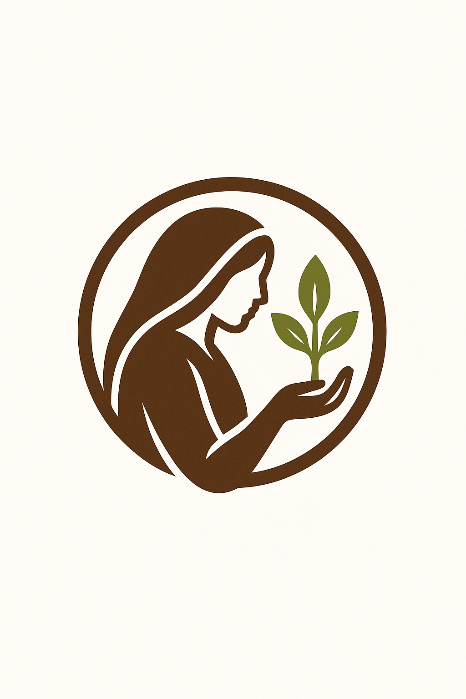

Our Mission is to provide support and resources for women to achieve economic independence.
The main objective of DWCRA is to improve the socio-economic, health, and educational status of rural women by providing financial assistance and creating employment opportunities for them to become self-reliant and to raise their standard of living. The target group of DWCRA is the same as that under IRDP, ie. the families living below the poverty line.
The basic objectives of the present study are to examine:
(i) the progress of the scheme;
(ii) the extent to which the scheme has succeeded in achieving its stipulated objectives; and
(iii) the performance of the units and to identify their problems and constraints.
The overall progress of implementation of the programme in the district is assessed with the help of secondary data collected from District Rural Development Authority (DRDA), Thrissur and from the various Block Panchayat offices.